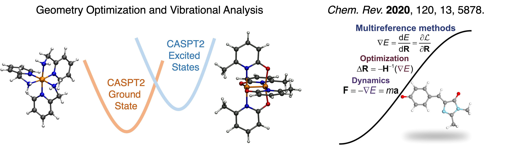
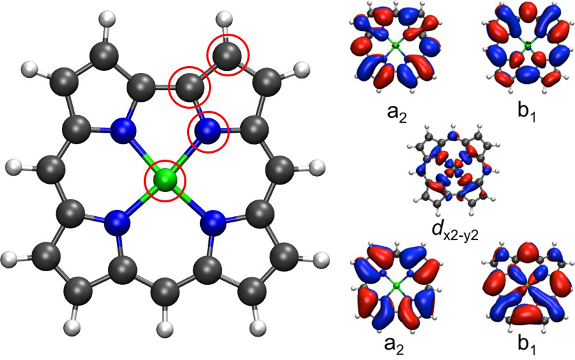
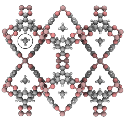
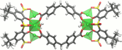

By taking an approach where multiple methods are used in combination, fundamental insights can be made in complex systems: where the complexity may arise either from the number of atoms or from strong electron correlation. Our research aims to tackle diverse problems in inorganic chemistry, f-element chemistry, and materials science. Applications include controlling spin in heavy element chemistry, information storage/electronic devices, catalysis, environmental sensors, and more.
Electronic Structure Beyond DFT: From Transition Metal to Actinide Chemistry
Multiconfigurational electronic structures have been shown to arrise in a wide variety of metal complexes. For transition metals, this phenomena manifests in metal-metal bonds, spin-crossover complexes, and single molecule magnets. We are interested in using methods such as the complete active space perturbtaion theory method (CASPT2) to study a wide variety of systems beyond DFT. Our work makes use of the anayltical CASPT2 gradients implemented in the BAGEL program package.

These effects are even more pronounced at the bottom of the periodic table. Actinides often have occupied 5f and 6d orbitals that lie extremely close in energy, not only to one another but often to ligand orbitals as well. The role that covalent bonding, spin-orbit coupling, and the nature of multiple low-lying excited states play in the chemical properties of actinide-containing systems is a vibrant and challenging area of research. In other cases, electrostatic contributions to bonding dominate and our group employs density functional theory (DFT) methods to study these systems. This work is funded by the Department of Energy's Computational Chemical Sciences Research Program.

Reactivity with Transition Metal Complexes
As part of our work in the Center for Sustainable Polymers (CSP), we are exploring the decarbonylation of fatty acid methyl esters (FAMES) by ruthenium catalysts. By means of density functional theory, we seek to elucidate the reaction mechanism and the effect changing the directing group has on catalyst performance. This work is in collaboration with the Tolman group at Washington University in St. Louis

While the majority of reactivity in transition metal complexes occurs at the metal site, ligand-centered reactivity is another possibility. We are interested in the role ligands play in reactivity, particularly in cases where the nature of the metal and functional groups on the ligand effect the behavior of the complex. This work is in collaboration with the Daly group at the University of Iowa.
Adsorption in Nanoporous Materials and Molecular Containers
Nanoporous materials such as metal–organic frameworks (MOFs) and zeolites have been widely used for gas storage and separations, catalysis, and sensing applications. In our group, we are interested in cases where selectivity of guest adsorption can be obtained by tuning intermolecular interactions. We are also interested in cases where the electronic structure changes during gas adsorption processes.

Another class of materials we are interested in are metal–organic supercontainers (MOSCs). Like MOFs, MOCSs contain a metal node and linker; however, MOSCs also contain a capping group leading to the formation of a molecular cage in solution instead of a crystalline solid. We are exploring how cations, anions, and neurotransmitters adsorb in this family of container molecules in collaboration with our colleague at USD, Dr. Zhengqiang Wang.
